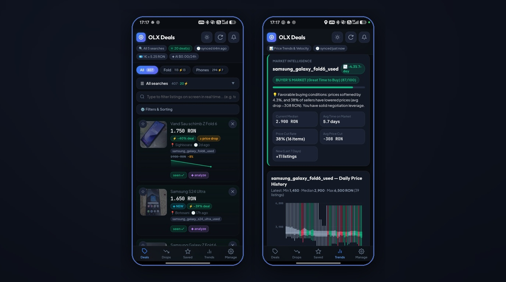
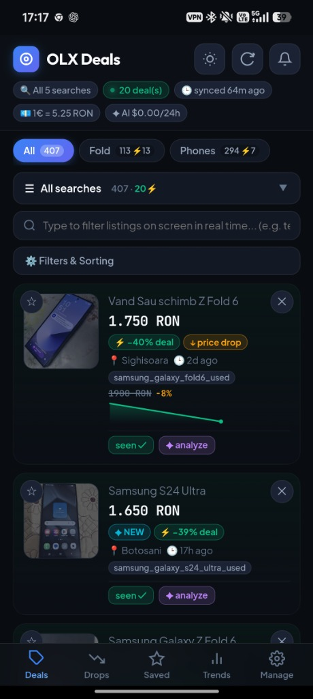
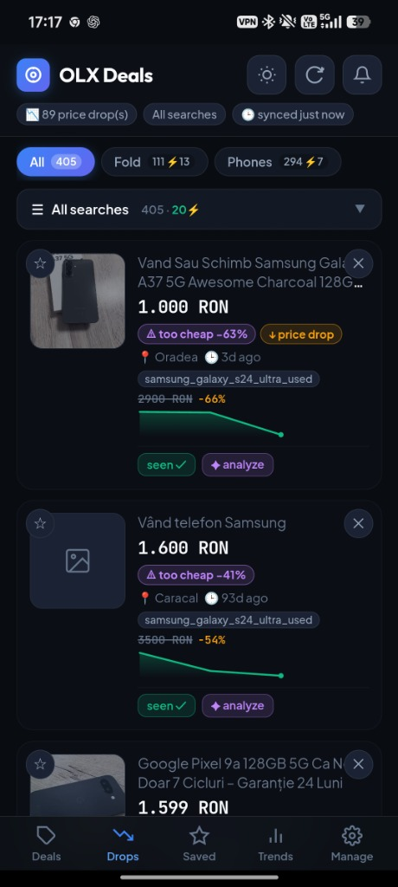
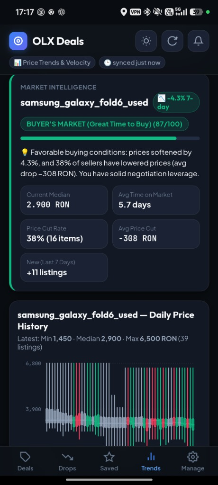
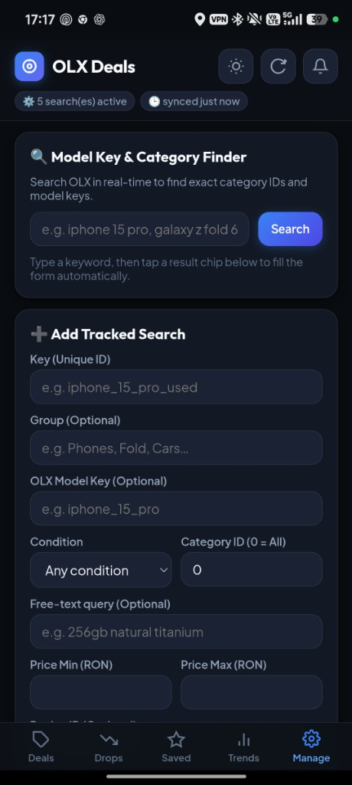
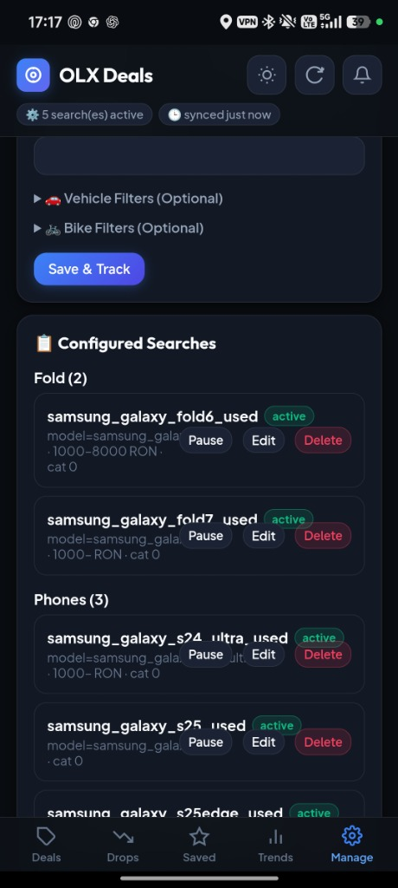

Alltagswerkzeuge · Android + PWA
BP Digitizer
Erfasse Blutdruckwerte, verfolge Entwicklungen und exportiere deinen Verlauf. Eine App für Android und das Web.
Beobachte Kleinanzeigen, vergleiche Preisänderungen und entdecke gute Angebote.

Verfolgen Sie Produkte auf OLX.ro und entdecken Sie wirklich gute Angebote – über ein selbst gehostetes, mobilfreundliches Dashboard, auf das Sie direkt von Ihrem Telefon aus zugreifen können.
Es ruft regelmäßig Angebote für konfigurierte Suchvorgänge ab, vergleicht sie mit einer lokalen SQLite-Datenbank, um neue Angebote und Preissenkungen zu erkennen, normalisiert Währungen und filtert störende und verdächtige Angebote heraus.





Erfasse Blutdruckwerte, verfolge Entwicklungen und exportiere deinen Verlauf. Eine App für Android und das Web.

Ein kleiner Baustein, mit dem Web-Apps offline funktionieren und aktuell bleiben.

Verwandle ein Foto in verbundene Muster zum Ausschneiden aus Metall.